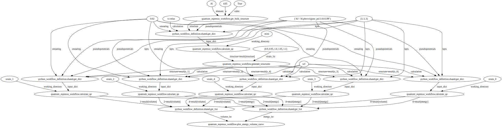

Load Quantum Espresso Energy Volume Curve Workflow#
Plot#
from python_workflow_definition.plot import plot
plot(file_name='workflow_qe.json')

Aiida#
from python_workflow_definition.aiida import load_workflow_json
from aiida import load_profile
load_profile()
Profile<uuid='91b600f4af5f477facd703b8cfc12911' name='pwd'>
wg = load_workflow_json(file_name='workflow_qe.json')
wg
wg.run()
04/13/2025 06:56:31 AM <3342> aiida.orm.nodes.process.workflow.workchain.WorkChainNode: [REPORT] [45|WorkGraphEngine|continue_workgraph]: tasks ready to run: get_bulk_structure1
04/13/2025 06:56:31 AM <3342> aiida.orm.nodes.process.workflow.workchain.WorkChainNode: [REPORT] [45|WorkGraphEngine|update_task_state]: Task: get_bulk_structure1, type: PyFunction, finished.
04/13/2025 06:56:31 AM <3342> aiida.orm.nodes.process.workflow.workchain.WorkChainNode: [REPORT] [45|WorkGraphEngine|continue_workgraph]: tasks ready to run: get_dict10
04/13/2025 06:56:32 AM <3342> aiida.orm.nodes.process.workflow.workchain.WorkChainNode: [REPORT] [45|WorkGraphEngine|update_task_state]: Task: get_dict10, type: PyFunction, finished.
04/13/2025 06:56:32 AM <3342> aiida.orm.nodes.process.workflow.workchain.WorkChainNode: [REPORT] [45|WorkGraphEngine|continue_workgraph]: tasks ready to run: calculate_qe2
[jupyter-pyiron-dev-pyth-flow-definition-cmhhpfb1:03420] mca_base_component_repository_open: unable to open mca_btl_openib: librdmacm.so.1: cannot open shared object file: No such file or directory (ignored)
Note: The following floating-point exceptions are signalling: IEEE_INVALID_FLAG
04/13/2025 06:57:23 AM <3342> aiida.orm.nodes.process.calculation.calcfunction.CalcFunctionNode: [WARNING] Found extra results that are not included in the output: dict_keys(['energy', 'volume'])
04/13/2025 06:57:23 AM <3342> aiida.orm.nodes.process.workflow.workchain.WorkChainNode: [REPORT] [45|WorkGraphEngine|update_task_state]: Task: calculate_qe2, type: PyFunction, finished.
04/13/2025 06:57:23 AM <3342> aiida.orm.nodes.process.workflow.workchain.WorkChainNode: [REPORT] [45|WorkGraphEngine|continue_workgraph]: tasks ready to run: generate_structures3
04/13/2025 06:57:24 AM <3342> aiida.orm.nodes.process.workflow.workchain.WorkChainNode: [REPORT] [45|WorkGraphEngine|update_task_state]: Task: generate_structures3, type: PyFunction, finished.
04/13/2025 06:57:24 AM <3342> aiida.orm.nodes.process.workflow.workchain.WorkChainNode: [REPORT] [45|WorkGraphEngine|continue_workgraph]: tasks ready to run: get_dict11,get_dict12,get_dict13,get_dict14,get_dict15
04/13/2025 06:57:25 AM <3342> aiida.orm.nodes.process.workflow.workchain.WorkChainNode: [REPORT] [45|WorkGraphEngine|update_task_state]: Task: get_dict11, type: PyFunction, finished.
04/13/2025 06:57:25 AM <3342> aiida.orm.nodes.process.workflow.workchain.WorkChainNode: [REPORT] [45|WorkGraphEngine|continue_workgraph]: tasks ready to run: calculate_qe4,get_dict12,get_dict13,get_dict14,get_dict15
[jupyter-pyiron-dev-pyth-flow-definition-cmhhpfb1:03434] mca_base_component_repository_open: unable to open mca_btl_openib: librdmacm.so.1: cannot open shared object file: No such file or directory (ignored)
Note: The following floating-point exceptions are signalling: IEEE_INVALID_FLAG
04/13/2025 06:57:36 AM <3342> aiida.orm.nodes.process.calculation.calcfunction.CalcFunctionNode: [WARNING] Found extra results that are not included in the output: dict_keys(['structure'])
04/13/2025 06:57:36 AM <3342> aiida.orm.nodes.process.workflow.workchain.WorkChainNode: [REPORT] [45|WorkGraphEngine|update_task_state]: Task: calculate_qe4, type: PyFunction, finished.
04/13/2025 06:57:36 AM <3342> aiida.orm.nodes.process.workflow.workchain.WorkChainNode: [REPORT] [45|WorkGraphEngine|continue_workgraph]: tasks ready to run: get_dict12,get_dict13,get_dict14,get_dict15
04/13/2025 06:57:37 AM <3342> aiida.orm.nodes.process.workflow.workchain.WorkChainNode: [REPORT] [45|WorkGraphEngine|update_task_state]: Task: get_dict12, type: PyFunction, finished.
04/13/2025 06:57:37 AM <3342> aiida.orm.nodes.process.workflow.workchain.WorkChainNode: [REPORT] [45|WorkGraphEngine|continue_workgraph]: tasks ready to run: calculate_qe5,get_dict13,get_dict14,get_dict15
[jupyter-pyiron-dev-pyth-flow-definition-cmhhpfb1:03444] mca_base_component_repository_open: unable to open mca_btl_openib: librdmacm.so.1: cannot open shared object file: No such file or directory (ignored)
Note: The following floating-point exceptions are signalling: IEEE_INVALID_FLAG
04/13/2025 06:57:48 AM <3342> aiida.orm.nodes.process.calculation.calcfunction.CalcFunctionNode: [WARNING] Found extra results that are not included in the output: dict_keys(['structure'])
04/13/2025 06:57:48 AM <3342> aiida.orm.nodes.process.workflow.workchain.WorkChainNode: [REPORT] [45|WorkGraphEngine|update_task_state]: Task: calculate_qe5, type: PyFunction, finished.
04/13/2025 06:57:48 AM <3342> aiida.orm.nodes.process.workflow.workchain.WorkChainNode: [REPORT] [45|WorkGraphEngine|continue_workgraph]: tasks ready to run: get_dict13,get_dict14,get_dict15
04/13/2025 06:57:49 AM <3342> aiida.orm.nodes.process.workflow.workchain.WorkChainNode: [REPORT] [45|WorkGraphEngine|update_task_state]: Task: get_dict13, type: PyFunction, finished.
04/13/2025 06:57:49 AM <3342> aiida.orm.nodes.process.workflow.workchain.WorkChainNode: [REPORT] [45|WorkGraphEngine|continue_workgraph]: tasks ready to run: calculate_qe6,get_dict14,get_dict15
[jupyter-pyiron-dev-pyth-flow-definition-cmhhpfb1:03454] mca_base_component_repository_open: unable to open mca_btl_openib: librdmacm.so.1: cannot open shared object file: No such file or directory (ignored)
Note: The following floating-point exceptions are signalling: IEEE_INVALID_FLAG
04/13/2025 06:58:01 AM <3342> aiida.orm.nodes.process.calculation.calcfunction.CalcFunctionNode: [WARNING] Found extra results that are not included in the output: dict_keys(['structure'])
04/13/2025 06:58:01 AM <3342> aiida.orm.nodes.process.workflow.workchain.WorkChainNode: [REPORT] [45|WorkGraphEngine|update_task_state]: Task: calculate_qe6, type: PyFunction, finished.
04/13/2025 06:58:01 AM <3342> aiida.orm.nodes.process.workflow.workchain.WorkChainNode: [REPORT] [45|WorkGraphEngine|continue_workgraph]: tasks ready to run: get_dict14,get_dict15
04/13/2025 06:58:02 AM <3342> aiida.orm.nodes.process.workflow.workchain.WorkChainNode: [REPORT] [45|WorkGraphEngine|update_task_state]: Task: get_dict14, type: PyFunction, finished.
04/13/2025 06:58:02 AM <3342> aiida.orm.nodes.process.workflow.workchain.WorkChainNode: [REPORT] [45|WorkGraphEngine|continue_workgraph]: tasks ready to run: calculate_qe7,get_dict15
[jupyter-pyiron-dev-pyth-flow-definition-cmhhpfb1:03464] mca_base_component_repository_open: unable to open mca_btl_openib: librdmacm.so.1: cannot open shared object file: No such file or directory (ignored)
Note: The following floating-point exceptions are signalling: IEEE_INVALID_FLAG
04/13/2025 06:58:15 AM <3342> aiida.orm.nodes.process.calculation.calcfunction.CalcFunctionNode: [WARNING] Found extra results that are not included in the output: dict_keys(['structure'])
04/13/2025 06:58:16 AM <3342> aiida.orm.nodes.process.workflow.workchain.WorkChainNode: [REPORT] [45|WorkGraphEngine|update_task_state]: Task: calculate_qe7, type: PyFunction, finished.
04/13/2025 06:58:16 AM <3342> aiida.orm.nodes.process.workflow.workchain.WorkChainNode: [REPORT] [45|WorkGraphEngine|continue_workgraph]: tasks ready to run: get_dict15
04/13/2025 06:58:16 AM <3342> aiida.orm.nodes.process.workflow.workchain.WorkChainNode: [REPORT] [45|WorkGraphEngine|update_task_state]: Task: get_dict15, type: PyFunction, finished.
04/13/2025 06:58:17 AM <3342> aiida.orm.nodes.process.workflow.workchain.WorkChainNode: [REPORT] [45|WorkGraphEngine|continue_workgraph]: tasks ready to run: calculate_qe8
[jupyter-pyiron-dev-pyth-flow-definition-cmhhpfb1:03482] mca_base_component_repository_open: unable to open mca_btl_openib: librdmacm.so.1: cannot open shared object file: No such file or directory (ignored)
Note: The following floating-point exceptions are signalling: IEEE_INVALID_FLAG
04/13/2025 06:58:31 AM <3342> aiida.orm.nodes.process.calculation.calcfunction.CalcFunctionNode: [WARNING] Found extra results that are not included in the output: dict_keys(['structure'])
04/13/2025 06:58:31 AM <3342> aiida.orm.nodes.process.workflow.workchain.WorkChainNode: [REPORT] [45|WorkGraphEngine|update_task_state]: Task: calculate_qe8, type: PyFunction, finished.
04/13/2025 06:58:31 AM <3342> aiida.orm.nodes.process.workflow.workchain.WorkChainNode: [REPORT] [45|WorkGraphEngine|continue_workgraph]: tasks ready to run: get_list16,get_list17
04/13/2025 06:58:32 AM <3342> aiida.orm.nodes.process.workflow.workchain.WorkChainNode: [REPORT] [45|WorkGraphEngine|update_task_state]: Task: get_list16, type: PyFunction, finished.
04/13/2025 06:58:32 AM <3342> aiida.orm.nodes.process.workflow.workchain.WorkChainNode: [REPORT] [45|WorkGraphEngine|continue_workgraph]: tasks ready to run: get_list17
04/13/2025 06:58:33 AM <3342> aiida.orm.nodes.process.workflow.workchain.WorkChainNode: [REPORT] [45|WorkGraphEngine|update_task_state]: Task: get_list17, type: PyFunction, finished.
04/13/2025 06:58:33 AM <3342> aiida.orm.nodes.process.workflow.workchain.WorkChainNode: [REPORT] [45|WorkGraphEngine|continue_workgraph]: tasks ready to run: plot_energy_volume_curve9
04/13/2025 06:58:33 AM <3342> aiida.orm.nodes.process.workflow.workchain.WorkChainNode: [REPORT] [45|WorkGraphEngine|update_task_state]: Task: plot_energy_volume_curve9, type: PyFunction, finished.
04/13/2025 06:58:33 AM <3342> aiida.orm.nodes.process.workflow.workchain.WorkChainNode: [REPORT] [45|WorkGraphEngine|continue_workgraph]: tasks ready to run:
04/13/2025 06:58:33 AM <3342> aiida.orm.nodes.process.workflow.workchain.WorkChainNode: [REPORT] [45|WorkGraphEngine|finalize]: Finalize workgraph.

executorlib#
from executorlib import SingleNodeExecutor
from python_workflow_definition.executorlib import load_workflow_json
with SingleNodeExecutor(max_workers=1) as exe:
result = load_workflow_json(file_name="workflow_qe.json", exe=exe).result()
[jupyter-pyiron-dev-pyth-flow-definition-cmhhpfb1:03606] mca_base_component_repository_open: unable to open mca_btl_openib: librdmacm.so.1: cannot open shared object file: No such file or directory (ignored)
Note: The following floating-point exceptions are signalling: IEEE_INVALID_FLAG
[jupyter-pyiron-dev-pyth-flow-definition-cmhhpfb1:03835] mca_base_component_repository_open: unable to open mca_btl_openib: librdmacm.so.1: cannot open shared object file: No such file or directory (ignored)
Note: The following floating-point exceptions are signalling: IEEE_INVALID_FLAG
[jupyter-pyiron-dev-pyth-flow-definition-cmhhpfb1:03898] mca_base_component_repository_open: unable to open mca_btl_openib: librdmacm.so.1: cannot open shared object file: No such file or directory (ignored)
Note: The following floating-point exceptions are signalling: IEEE_INVALID_FLAG
[jupyter-pyiron-dev-pyth-flow-definition-cmhhpfb1:03965] mca_base_component_repository_open: unable to open mca_btl_openib: librdmacm.so.1: cannot open shared object file: No such file or directory (ignored)
Note: The following floating-point exceptions are signalling: IEEE_INVALID_FLAG
[jupyter-pyiron-dev-pyth-flow-definition-cmhhpfb1:04028] mca_base_component_repository_open: unable to open mca_btl_openib: librdmacm.so.1: cannot open shared object file: No such file or directory (ignored)
Note: The following floating-point exceptions are signalling: IEEE_INVALID_FLAG
[jupyter-pyiron-dev-pyth-flow-definition-cmhhpfb1:04091] mca_base_component_repository_open: unable to open mca_btl_openib: librdmacm.so.1: cannot open shared object file: No such file or directory (ignored)
Note: The following floating-point exceptions are signalling: IEEE_INVALID_FLAG
result
jobflow#
from jobflow.managers.local import run_locally
/srv/conda/envs/notebook/lib/python3.12/site-packages/paramiko/pkey.py:82: CryptographyDeprecationWarning: TripleDES has been moved to cryptography.hazmat.decrepit.ciphers.algorithms.TripleDES and will be removed from cryptography.hazmat.primitives.ciphers.algorithms in 48.0.0.
"cipher": algorithms.TripleDES,
/srv/conda/envs/notebook/lib/python3.12/site-packages/paramiko/transport.py:253: CryptographyDeprecationWarning: TripleDES has been moved to cryptography.hazmat.decrepit.ciphers.algorithms.TripleDES and will be removed from cryptography.hazmat.primitives.ciphers.algorithms in 48.0.0.
"class": algorithms.TripleDES,
from python_workflow_definition.jobflow import load_workflow_json
flow = load_workflow_json(file_name="workflow_qe.json")
result = run_locally(flow)
result
2025-04-13 07:02:21,563 INFO Started executing jobs locally
2025-04-13 07:02:21,568 INFO Starting job - get_bulk_structure (c9f448be-e84d-48bf-b385-3870961a2fb9)
2025-04-13 07:02:21,570 INFO Finished job - get_bulk_structure (c9f448be-e84d-48bf-b385-3870961a2fb9)
2025-04-13 07:02:21,571 INFO Starting job - get_dict (c55fb87e-bbfa-4e35-958b-99c71c12d576)
2025-04-13 07:02:21,572 INFO Finished job - get_dict (c55fb87e-bbfa-4e35-958b-99c71c12d576)
2025-04-13 07:02:21,573 INFO Starting job - calculate_qe (aeb3fc22-014b-4532-bc29-ff1b0fba6eae)
[jupyter-pyiron-dev-pyth-flow-definition-cmhhpfb1:04743] mca_base_component_repository_open: unable to open mca_btl_openib: librdmacm.so.1: cannot open shared object file: No such file or directory (ignored)
2025-04-13 07:03:11,575 INFO Finished job - calculate_qe (aeb3fc22-014b-4532-bc29-ff1b0fba6eae)
2025-04-13 07:03:11,576 INFO Starting job - generate_structures (485664e7-bd7a-4a29-bfb8-b910722eedf8)
2025-04-13 07:03:11,580 INFO Finished job - generate_structures (485664e7-bd7a-4a29-bfb8-b910722eedf8)
2025-04-13 07:03:11,581 INFO Starting job - get_dict (33b68fd3-fde0-4c1c-8d2b-f52937127a4a)
2025-04-13 07:03:11,582 INFO Finished job - get_dict (33b68fd3-fde0-4c1c-8d2b-f52937127a4a)
2025-04-13 07:03:11,583 INFO Starting job - get_dict (45bef23d-00d3-48da-a929-2787f17a50ca)
2025-04-13 07:03:11,584 INFO Finished job - get_dict (45bef23d-00d3-48da-a929-2787f17a50ca)
2025-04-13 07:03:11,585 INFO Starting job - get_dict (5f59f66f-0ce6-4a7b-8940-b0fc6c54c70a)
2025-04-13 07:03:11,586 INFO Finished job - get_dict (5f59f66f-0ce6-4a7b-8940-b0fc6c54c70a)
2025-04-13 07:03:11,587 INFO Starting job - get_dict (fa497785-3884-4b73-ad6b-8b6acea8cf9a)
2025-04-13 07:03:11,588 INFO Finished job - get_dict (fa497785-3884-4b73-ad6b-8b6acea8cf9a)
2025-04-13 07:03:11,589 INFO Starting job - get_dict (b5a2b290-f943-457f-ae14-28908ccaab92)
2025-04-13 07:03:11,590 INFO Finished job - get_dict (b5a2b290-f943-457f-ae14-28908ccaab92)
2025-04-13 07:03:11,591 INFO Starting job - calculate_qe (ae33f406-ccd3-4f3f-9401-d75c58d66211)
Note: The following floating-point exceptions are signalling: IEEE_INVALID_FLAG
[jupyter-pyiron-dev-pyth-flow-definition-cmhhpfb1:04755] mca_base_component_repository_open: unable to open mca_btl_openib: librdmacm.so.1: cannot open shared object file: No such file or directory (ignored)
Note: The following floating-point exceptions are signalling: IEEE_INVALID_FLAG
2025-04-13 07:03:21,667 INFO Finished job - calculate_qe (ae33f406-ccd3-4f3f-9401-d75c58d66211)
2025-04-13 07:03:21,668 INFO Starting job - calculate_qe (c8296bde-b27a-44da-bd7f-c4bd65cf3d80)
[jupyter-pyiron-dev-pyth-flow-definition-cmhhpfb1:04765] mca_base_component_repository_open: unable to open mca_btl_openib: librdmacm.so.1: cannot open shared object file: No such file or directory (ignored)
2025-04-13 07:03:31,979 INFO Finished job - calculate_qe (c8296bde-b27a-44da-bd7f-c4bd65cf3d80)
2025-04-13 07:03:31,980 INFO Starting job - calculate_qe (8dafc5cc-d341-4339-bec4-e23de3e46f76)
Note: The following floating-point exceptions are signalling: IEEE_INVALID_FLAG
[jupyter-pyiron-dev-pyth-flow-definition-cmhhpfb1:04775] mca_base_component_repository_open: unable to open mca_btl_openib: librdmacm.so.1: cannot open shared object file: No such file or directory (ignored)
2025-04-13 07:03:43,511 INFO Finished job - calculate_qe (8dafc5cc-d341-4339-bec4-e23de3e46f76)
2025-04-13 07:03:43,513 INFO Starting job - calculate_qe (61c54649-8c42-4778-82be-0dffb63dc303)
Note: The following floating-point exceptions are signalling: IEEE_INVALID_FLAG
[jupyter-pyiron-dev-pyth-flow-definition-cmhhpfb1:04785] mca_base_component_repository_open: unable to open mca_btl_openib: librdmacm.so.1: cannot open shared object file: No such file or directory (ignored)
2025-04-13 07:03:57,154 INFO Finished job - calculate_qe (61c54649-8c42-4778-82be-0dffb63dc303)
2025-04-13 07:03:57,155 INFO Starting job - calculate_qe (6b451950-2585-4623-b260-1bf0773d25c3)
Note: The following floating-point exceptions are signalling: IEEE_INVALID_FLAG
[jupyter-pyiron-dev-pyth-flow-definition-cmhhpfb1:04795] mca_base_component_repository_open: unable to open mca_btl_openib: librdmacm.so.1: cannot open shared object file: No such file or directory (ignored)
Note: The following floating-point exceptions are signalling: IEEE_INVALID_FLAG
2025-04-13 07:04:11,485 INFO Finished job - calculate_qe (6b451950-2585-4623-b260-1bf0773d25c3)
2025-04-13 07:04:11,486 INFO Starting job - get_list (4c3fe215-d352-4c63-a1ba-ca69512d3073)
2025-04-13 07:04:11,493 INFO Finished job - get_list (4c3fe215-d352-4c63-a1ba-ca69512d3073)
2025-04-13 07:04:11,494 INFO Starting job - get_list (06d78c2c-4399-4e80-9db8-d66c2b67644e)
2025-04-13 07:04:11,500 INFO Finished job - get_list (06d78c2c-4399-4e80-9db8-d66c2b67644e)
2025-04-13 07:04:11,501 INFO Starting job - plot_energy_volume_curve (c6edb445-7b35-45d4-a038-bcb006cb9f28)
2025-04-13 07:04:11,587 INFO Finished job - plot_energy_volume_curve (c6edb445-7b35-45d4-a038-bcb006cb9f28)
2025-04-13 07:04:11,588 INFO Finished executing jobs locally
{'c9f448be-e84d-48bf-b385-3870961a2fb9': {1: Response(output='{"immutable_id": null, "last_modified": null, "elements": ["Al"], "nelements": 1, "elements_ratios": [1.0], "chemical_formula_descriptive": "Al4", "chemical_formula_reduced": "Al", "chemical_formula_hill": null, "chemical_formula_anonymous": "A", "dimension_types": [1, 1, 1], "nperiodic_dimensions": 3, "lattice_vectors": [[4.05, 0.0, 0.0], [0.0, 4.05, 0.0], [0.0, 0.0, 4.05]], "space_group_symmetry_operations_xyz": null, "space_group_symbol_hall": null, "space_group_symbol_hermann_mauguin": null, "space_group_symbol_hermann_mauguin_extended": null, "space_group_it_number": null, "cartesian_site_positions": [[0.0, 0.0, 0.0], [0.0, 2.025, 2.025], [2.025, 0.0, 2.025], [2.025, 2.025, 0.0]], "nsites": 4, "species": [{"name": "Al", "chemical_symbols": ["Al"], "concentration": [1.0], "mass": null, "original_name": null, "attached": null, "nattached": null}], "species_at_sites": ["Al", "Al", "Al", "Al"], "assemblies": null, "structure_features": []}', detour=None, addition=None, replace=None, stored_data=None, stop_children=False, stop_jobflow=False, job_dir=PosixPath('/home/jovyan'))},
'c55fb87e-bbfa-4e35-958b-99c71c12d576': {1: Response(output={'structure': '{"immutable_id": null, "last_modified": null, "elements": ["Al"], "nelements": 1, "elements_ratios": [1.0], "chemical_formula_descriptive": "Al4", "chemical_formula_reduced": "Al", "chemical_formula_hill": null, "chemical_formula_anonymous": "A", "dimension_types": [1, 1, 1], "nperiodic_dimensions": 3, "lattice_vectors": [[4.05, 0.0, 0.0], [0.0, 4.05, 0.0], [0.0, 0.0, 4.05]], "space_group_symmetry_operations_xyz": null, "space_group_symbol_hall": null, "space_group_symbol_hermann_mauguin": null, "space_group_symbol_hermann_mauguin_extended": null, "space_group_it_number": null, "cartesian_site_positions": [[0.0, 0.0, 0.0], [0.0, 2.025, 2.025], [2.025, 0.0, 2.025], [2.025, 2.025, 0.0]], "nsites": 4, "species": [{"name": "Al", "chemical_symbols": ["Al"], "concentration": [1.0], "mass": null, "original_name": null, "attached": null, "nattached": null}], "species_at_sites": ["Al", "Al", "Al", "Al"], "assemblies": null, "structure_features": []}', 'pseudopotentials': {'Al': 'Al.pbe-n-kjpaw_psl.1.0.0.UPF'}, 'kpts': [3, 3, 3], 'calculation': 'vc-relax', 'smearing': 0.02}, detour=None, addition=None, replace=None, stored_data=None, stop_children=False, stop_jobflow=False, job_dir=PosixPath('/home/jovyan'))},
'aeb3fc22-014b-4532-bc29-ff1b0fba6eae': {1: Response(output={'structure': '{"immutable_id": null, "last_modified": null, "elements": ["Al"], "nelements": 1, "elements_ratios": [1.0], "chemical_formula_descriptive": "Al4", "chemical_formula_reduced": "Al", "chemical_formula_hill": null, "chemical_formula_anonymous": "A", "dimension_types": [1, 1, 1], "nperiodic_dimensions": 3, "lattice_vectors": [[4.045637215946798, 0.0, 0.0], [0.0, 4.045637215946798, 0.0], [0.0, 0.0, 4.045637215946798]], "space_group_symmetry_operations_xyz": null, "space_group_symbol_hall": null, "space_group_symbol_hermann_mauguin": null, "space_group_symbol_hermann_mauguin_extended": null, "space_group_it_number": null, "cartesian_site_positions": [[0.0, 0.0, 0.0], [0.0, 2.022818607973399, 2.022818607973399], [2.022818607973399, 0.0, 2.022818607973399], [2.022818607973399, 2.022818607973399, 0.0]], "nsites": 4, "species": [{"name": "Al", "chemical_symbols": ["Al"], "concentration": [1.0], "mass": null, "original_name": null, "attached": null, "nattached": null}], "species_at_sites": ["Al", "Al", "Al", "Al"], "assemblies": null, "structure_features": []}', 'energy': -1074.9365262253575, 'volume': 66.2156744823604}, detour=None, addition=None, replace=None, stored_data=None, stop_children=False, stop_jobflow=False, job_dir=PosixPath('/home/jovyan'))},
'485664e7-bd7a-4a29-bfb8-b910722eedf8': {1: Response(output={'s_0': '{"immutable_id": null, "last_modified": null, "elements": ["Al"], "nelements": 1, "elements_ratios": [1.0], "chemical_formula_descriptive": "Al4", "chemical_formula_reduced": "Al", "chemical_formula_hill": null, "chemical_formula_anonymous": "A", "dimension_types": [1, 1, 1], "nperiodic_dimensions": 3, "lattice_vectors": [[3.9060197859621075, 0.0, 0.0], [0.0, 3.9060197859621075, 0.0], [0.0, 0.0, 3.9060197859621075]], "space_group_symmetry_operations_xyz": null, "space_group_symbol_hall": null, "space_group_symbol_hermann_mauguin": null, "space_group_symbol_hermann_mauguin_extended": null, "space_group_it_number": null, "cartesian_site_positions": [[0.0, 0.0, 0.0], [0.0, 1.9530098929810538, 1.9530098929810538], [1.9530098929810538, 0.0, 1.9530098929810538], [1.9530098929810538, 1.9530098929810538, 0.0]], "nsites": 4, "species": [{"name": "Al", "chemical_symbols": ["Al"], "concentration": [1.0], "mass": null, "original_name": null, "attached": null, "nattached": null}], "species_at_sites": ["Al", "Al", "Al", "Al"], "assemblies": null, "structure_features": []}', 's_1': '{"immutable_id": null, "last_modified": null, "elements": ["Al"], "nelements": 1, "elements_ratios": [1.0], "chemical_formula_descriptive": "Al4", "chemical_formula_reduced": "Al", "chemical_formula_hill": null, "chemical_formula_anonymous": "A", "dimension_types": [1, 1, 1], "nperiodic_dimensions": 3, "lattice_vectors": [[3.9770538443180072, 0.0, 0.0], [0.0, 3.9770538443180072, 0.0], [0.0, 0.0, 3.9770538443180072]], "space_group_symmetry_operations_xyz": null, "space_group_symbol_hall": null, "space_group_symbol_hermann_mauguin": null, "space_group_symbol_hermann_mauguin_extended": null, "space_group_it_number": null, "cartesian_site_positions": [[0.0, 0.0, 0.0], [0.0, 1.9885269221590036, 1.9885269221590036], [1.9885269221590036, 0.0, 1.9885269221590036], [1.9885269221590036, 1.9885269221590036, 0.0]], "nsites": 4, "species": [{"name": "Al", "chemical_symbols": ["Al"], "concentration": [1.0], "mass": null, "original_name": null, "attached": null, "nattached": null}], "species_at_sites": ["Al", "Al", "Al", "Al"], "assemblies": null, "structure_features": []}', 's_2': '{"immutable_id": null, "last_modified": null, "elements": ["Al"], "nelements": 1, "elements_ratios": [1.0], "chemical_formula_descriptive": "Al4", "chemical_formula_reduced": "Al", "chemical_formula_hill": null, "chemical_formula_anonymous": "A", "dimension_types": [1, 1, 1], "nperiodic_dimensions": 3, "lattice_vectors": [[4.045637215946798, 0.0, 0.0], [0.0, 4.045637215946798, 0.0], [0.0, 0.0, 4.045637215946798]], "space_group_symmetry_operations_xyz": null, "space_group_symbol_hall": null, "space_group_symbol_hermann_mauguin": null, "space_group_symbol_hermann_mauguin_extended": null, "space_group_it_number": null, "cartesian_site_positions": [[0.0, 0.0, 0.0], [0.0, 2.022818607973399, 2.022818607973399], [2.022818607973399, 0.0, 2.022818607973399], [2.022818607973399, 2.022818607973399, 0.0]], "nsites": 4, "species": [{"name": "Al", "chemical_symbols": ["Al"], "concentration": [1.0], "mass": null, "original_name": null, "attached": null, "nattached": null}], "species_at_sites": ["Al", "Al", "Al", "Al"], "assemblies": null, "structure_features": []}', 's_3': '{"immutable_id": null, "last_modified": null, "elements": ["Al"], "nelements": 1, "elements_ratios": [1.0], "chemical_formula_descriptive": "Al4", "chemical_formula_reduced": "Al", "chemical_formula_hill": null, "chemical_formula_anonymous": "A", "dimension_types": [1, 1, 1], "nperiodic_dimensions": 3, "lattice_vectors": [[4.111970927282913, 0.0, 0.0], [0.0, 4.111970927282913, 0.0], [0.0, 0.0, 4.111970927282913]], "space_group_symmetry_operations_xyz": null, "space_group_symbol_hall": null, "space_group_symbol_hermann_mauguin": null, "space_group_symbol_hermann_mauguin_extended": null, "space_group_it_number": null, "cartesian_site_positions": [[0.0, 0.0, 0.0], [0.0, 2.0559854636414565, 2.0559854636414565], [2.0559854636414565, 0.0, 2.0559854636414565], [2.0559854636414565, 2.0559854636414565, 0.0]], "nsites": 4, "species": [{"name": "Al", "chemical_symbols": ["Al"], "concentration": [1.0], "mass": null, "original_name": null, "attached": null, "nattached": null}], "species_at_sites": ["Al", "Al", "Al", "Al"], "assemblies": null, "structure_features": []}', 's_4': '{"immutable_id": null, "last_modified": null, "elements": ["Al"], "nelements": 1, "elements_ratios": [1.0], "chemical_formula_descriptive": "Al4", "chemical_formula_reduced": "Al", "chemical_formula_hill": null, "chemical_formula_anonymous": "A", "dimension_types": [1, 1, 1], "nperiodic_dimensions": 3, "lattice_vectors": [[4.176230852372137, 0.0, 0.0], [0.0, 4.176230852372137, 0.0], [0.0, 0.0, 4.176230852372137]], "space_group_symmetry_operations_xyz": null, "space_group_symbol_hall": null, "space_group_symbol_hermann_mauguin": null, "space_group_symbol_hermann_mauguin_extended": null, "space_group_it_number": null, "cartesian_site_positions": [[0.0, 0.0, 0.0], [0.0, 2.0881154261860684, 2.0881154261860684], [2.0881154261860684, 0.0, 2.0881154261860684], [2.0881154261860684, 2.0881154261860684, 0.0]], "nsites": 4, "species": [{"name": "Al", "chemical_symbols": ["Al"], "concentration": [1.0], "mass": null, "original_name": null, "attached": null, "nattached": null}], "species_at_sites": ["Al", "Al", "Al", "Al"], "assemblies": null, "structure_features": []}'}, detour=None, addition=None, replace=None, stored_data=None, stop_children=False, stop_jobflow=False, job_dir=PosixPath('/home/jovyan'))},
'33b68fd3-fde0-4c1c-8d2b-f52937127a4a': {1: Response(output={'structure': '{"immutable_id": null, "last_modified": null, "elements": ["Al"], "nelements": 1, "elements_ratios": [1.0], "chemical_formula_descriptive": "Al4", "chemical_formula_reduced": "Al", "chemical_formula_hill": null, "chemical_formula_anonymous": "A", "dimension_types": [1, 1, 1], "nperiodic_dimensions": 3, "lattice_vectors": [[3.9060197859621075, 0.0, 0.0], [0.0, 3.9060197859621075, 0.0], [0.0, 0.0, 3.9060197859621075]], "space_group_symmetry_operations_xyz": null, "space_group_symbol_hall": null, "space_group_symbol_hermann_mauguin": null, "space_group_symbol_hermann_mauguin_extended": null, "space_group_it_number": null, "cartesian_site_positions": [[0.0, 0.0, 0.0], [0.0, 1.9530098929810538, 1.9530098929810538], [1.9530098929810538, 0.0, 1.9530098929810538], [1.9530098929810538, 1.9530098929810538, 0.0]], "nsites": 4, "species": [{"name": "Al", "chemical_symbols": ["Al"], "concentration": [1.0], "mass": null, "original_name": null, "attached": null, "nattached": null}], "species_at_sites": ["Al", "Al", "Al", "Al"], "assemblies": null, "structure_features": []}', 'pseudopotentials': {'Al': 'Al.pbe-n-kjpaw_psl.1.0.0.UPF'}, 'kpts': [3, 3, 3], 'calculation': 'scf', 'smearing': 0.02}, detour=None, addition=None, replace=None, stored_data=None, stop_children=False, stop_jobflow=False, job_dir=PosixPath('/home/jovyan'))},
'45bef23d-00d3-48da-a929-2787f17a50ca': {1: Response(output={'structure': '{"immutable_id": null, "last_modified": null, "elements": ["Al"], "nelements": 1, "elements_ratios": [1.0], "chemical_formula_descriptive": "Al4", "chemical_formula_reduced": "Al", "chemical_formula_hill": null, "chemical_formula_anonymous": "A", "dimension_types": [1, 1, 1], "nperiodic_dimensions": 3, "lattice_vectors": [[3.9770538443180072, 0.0, 0.0], [0.0, 3.9770538443180072, 0.0], [0.0, 0.0, 3.9770538443180072]], "space_group_symmetry_operations_xyz": null, "space_group_symbol_hall": null, "space_group_symbol_hermann_mauguin": null, "space_group_symbol_hermann_mauguin_extended": null, "space_group_it_number": null, "cartesian_site_positions": [[0.0, 0.0, 0.0], [0.0, 1.9885269221590036, 1.9885269221590036], [1.9885269221590036, 0.0, 1.9885269221590036], [1.9885269221590036, 1.9885269221590036, 0.0]], "nsites": 4, "species": [{"name": "Al", "chemical_symbols": ["Al"], "concentration": [1.0], "mass": null, "original_name": null, "attached": null, "nattached": null}], "species_at_sites": ["Al", "Al", "Al", "Al"], "assemblies": null, "structure_features": []}', 'pseudopotentials': {'Al': 'Al.pbe-n-kjpaw_psl.1.0.0.UPF'}, 'kpts': [3, 3, 3], 'calculation': 'scf', 'smearing': 0.02}, detour=None, addition=None, replace=None, stored_data=None, stop_children=False, stop_jobflow=False, job_dir=PosixPath('/home/jovyan'))},
'5f59f66f-0ce6-4a7b-8940-b0fc6c54c70a': {1: Response(output={'structure': '{"immutable_id": null, "last_modified": null, "elements": ["Al"], "nelements": 1, "elements_ratios": [1.0], "chemical_formula_descriptive": "Al4", "chemical_formula_reduced": "Al", "chemical_formula_hill": null, "chemical_formula_anonymous": "A", "dimension_types": [1, 1, 1], "nperiodic_dimensions": 3, "lattice_vectors": [[4.045637215946798, 0.0, 0.0], [0.0, 4.045637215946798, 0.0], [0.0, 0.0, 4.045637215946798]], "space_group_symmetry_operations_xyz": null, "space_group_symbol_hall": null, "space_group_symbol_hermann_mauguin": null, "space_group_symbol_hermann_mauguin_extended": null, "space_group_it_number": null, "cartesian_site_positions": [[0.0, 0.0, 0.0], [0.0, 2.022818607973399, 2.022818607973399], [2.022818607973399, 0.0, 2.022818607973399], [2.022818607973399, 2.022818607973399, 0.0]], "nsites": 4, "species": [{"name": "Al", "chemical_symbols": ["Al"], "concentration": [1.0], "mass": null, "original_name": null, "attached": null, "nattached": null}], "species_at_sites": ["Al", "Al", "Al", "Al"], "assemblies": null, "structure_features": []}', 'pseudopotentials': {'Al': 'Al.pbe-n-kjpaw_psl.1.0.0.UPF'}, 'kpts': [3, 3, 3], 'calculation': 'scf', 'smearing': 0.02}, detour=None, addition=None, replace=None, stored_data=None, stop_children=False, stop_jobflow=False, job_dir=PosixPath('/home/jovyan'))},
'fa497785-3884-4b73-ad6b-8b6acea8cf9a': {1: Response(output={'structure': '{"immutable_id": null, "last_modified": null, "elements": ["Al"], "nelements": 1, "elements_ratios": [1.0], "chemical_formula_descriptive": "Al4", "chemical_formula_reduced": "Al", "chemical_formula_hill": null, "chemical_formula_anonymous": "A", "dimension_types": [1, 1, 1], "nperiodic_dimensions": 3, "lattice_vectors": [[4.111970927282913, 0.0, 0.0], [0.0, 4.111970927282913, 0.0], [0.0, 0.0, 4.111970927282913]], "space_group_symmetry_operations_xyz": null, "space_group_symbol_hall": null, "space_group_symbol_hermann_mauguin": null, "space_group_symbol_hermann_mauguin_extended": null, "space_group_it_number": null, "cartesian_site_positions": [[0.0, 0.0, 0.0], [0.0, 2.0559854636414565, 2.0559854636414565], [2.0559854636414565, 0.0, 2.0559854636414565], [2.0559854636414565, 2.0559854636414565, 0.0]], "nsites": 4, "species": [{"name": "Al", "chemical_symbols": ["Al"], "concentration": [1.0], "mass": null, "original_name": null, "attached": null, "nattached": null}], "species_at_sites": ["Al", "Al", "Al", "Al"], "assemblies": null, "structure_features": []}', 'pseudopotentials': {'Al': 'Al.pbe-n-kjpaw_psl.1.0.0.UPF'}, 'kpts': [3, 3, 3], 'calculation': 'scf', 'smearing': 0.02}, detour=None, addition=None, replace=None, stored_data=None, stop_children=False, stop_jobflow=False, job_dir=PosixPath('/home/jovyan'))},
'b5a2b290-f943-457f-ae14-28908ccaab92': {1: Response(output={'structure': '{"immutable_id": null, "last_modified": null, "elements": ["Al"], "nelements": 1, "elements_ratios": [1.0], "chemical_formula_descriptive": "Al4", "chemical_formula_reduced": "Al", "chemical_formula_hill": null, "chemical_formula_anonymous": "A", "dimension_types": [1, 1, 1], "nperiodic_dimensions": 3, "lattice_vectors": [[4.176230852372137, 0.0, 0.0], [0.0, 4.176230852372137, 0.0], [0.0, 0.0, 4.176230852372137]], "space_group_symmetry_operations_xyz": null, "space_group_symbol_hall": null, "space_group_symbol_hermann_mauguin": null, "space_group_symbol_hermann_mauguin_extended": null, "space_group_it_number": null, "cartesian_site_positions": [[0.0, 0.0, 0.0], [0.0, 2.0881154261860684, 2.0881154261860684], [2.0881154261860684, 0.0, 2.0881154261860684], [2.0881154261860684, 2.0881154261860684, 0.0]], "nsites": 4, "species": [{"name": "Al", "chemical_symbols": ["Al"], "concentration": [1.0], "mass": null, "original_name": null, "attached": null, "nattached": null}], "species_at_sites": ["Al", "Al", "Al", "Al"], "assemblies": null, "structure_features": []}', 'pseudopotentials': {'Al': 'Al.pbe-n-kjpaw_psl.1.0.0.UPF'}, 'kpts': [3, 3, 3], 'calculation': 'scf', 'smearing': 0.02}, detour=None, addition=None, replace=None, stored_data=None, stop_children=False, stop_jobflow=False, job_dir=PosixPath('/home/jovyan'))},
'ae33f406-ccd3-4f3f-9401-d75c58d66211': {1: Response(output={'structure': '{"immutable_id": null, "last_modified": null, "elements": ["Al"], "nelements": 1, "elements_ratios": [1.0], "chemical_formula_descriptive": "Al4", "chemical_formula_reduced": "Al", "chemical_formula_hill": null, "chemical_formula_anonymous": "A", "dimension_types": [1, 1, 1], "nperiodic_dimensions": 3, "lattice_vectors": [[3.9060197688891454, 0.0, 0.0], [0.0, 3.9060197688891454, 0.0], [0.0, 0.0, 3.9060197688891454]], "space_group_symmetry_operations_xyz": null, "space_group_symbol_hall": null, "space_group_symbol_hermann_mauguin": null, "space_group_symbol_hermann_mauguin_extended": null, "space_group_it_number": null, "cartesian_site_positions": [[0.0, 0.0, 0.0], [0.0, 1.9530098844635175, 1.9530098844635175], [1.9530098844635175, 0.0, 1.9530098844635175], [1.9530098844635175, 1.9530098844635175, 0.0]], "nsites": 4, "species": [{"name": "Al", "chemical_symbols": ["Al"], "concentration": [1.0], "mass": null, "original_name": null, "attached": null, "nattached": null}], "species_at_sites": ["Al", "Al", "Al", "Al"], "assemblies": null, "structure_features": []}', 'energy': -1074.845744615059, 'volume': 59.59410625267827}, detour=None, addition=None, replace=None, stored_data=None, stop_children=False, stop_jobflow=False, job_dir=PosixPath('/home/jovyan'))},
'c8296bde-b27a-44da-bd7f-c4bd65cf3d80': {1: Response(output={'structure': '{"immutable_id": null, "last_modified": null, "elements": ["Al"], "nelements": 1, "elements_ratios": [1.0], "chemical_formula_descriptive": "Al4", "chemical_formula_reduced": "Al", "chemical_formula_hill": null, "chemical_formula_anonymous": "A", "dimension_types": [1, 1, 1], "nperiodic_dimensions": 3, "lattice_vectors": [[3.97705382693456, 0.0, 0.0], [0.0, 3.97705382693456, 0.0], [0.0, 0.0, 3.97705382693456]], "space_group_symmetry_operations_xyz": null, "space_group_symbol_hall": null, "space_group_symbol_hermann_mauguin": null, "space_group_symbol_hermann_mauguin_extended": null, "space_group_it_number": null, "cartesian_site_positions": [[0.0, 0.0, 0.0], [0.0, 1.9885269135082746, 1.9885269135082746], [1.9885269135082746, 0.0, 1.9885269135082746], [1.9885269135082746, 1.9885269135082746, 0.0]], "nsites": 4, "species": [{"name": "Al", "chemical_symbols": ["Al"], "concentration": [1.0], "mass": null, "original_name": null, "attached": null, "nattached": null}], "species_at_sites": ["Al", "Al", "Al", "Al"], "assemblies": null, "structure_features": []}', 'energy': -1074.9161488594593, 'volume': 62.90488993338262}, detour=None, addition=None, replace=None, stored_data=None, stop_children=False, stop_jobflow=False, job_dir=PosixPath('/home/jovyan'))},
'8dafc5cc-d341-4339-bec4-e23de3e46f76': {1: Response(output={'structure': '{"immutable_id": null, "last_modified": null, "elements": ["Al"], "nelements": 1, "elements_ratios": [1.0], "chemical_formula_descriptive": "Al4", "chemical_formula_reduced": "Al", "chemical_formula_hill": null, "chemical_formula_anonymous": "A", "dimension_types": [1, 1, 1], "nperiodic_dimensions": 3, "lattice_vectors": [[4.045637198263576, 0.0, 0.0], [0.0, 4.045637198263576, 0.0], [0.0, 0.0, 4.045637198263576]], "space_group_symmetry_operations_xyz": null, "space_group_symbol_hall": null, "space_group_symbol_hermann_mauguin": null, "space_group_symbol_hermann_mauguin_extended": null, "space_group_it_number": null, "cartesian_site_positions": [[0.0, 0.0, 0.0], [0.0, 2.0228185991583882, 2.0228185991583882], [2.0228185991583882, 0.0, 2.0228185991583882], [2.0228185991583882, 2.0228185991583882, 0.0]], "nsites": 4, "species": [{"name": "Al", "chemical_symbols": ["Al"], "concentration": [1.0], "mass": null, "original_name": null, "attached": null, "nattached": null}], "species_at_sites": ["Al", "Al", "Al", "Al"], "assemblies": null, "structure_features": []}', 'energy': -1074.9365241668365, 'volume': 66.21567361408694}, detour=None, addition=None, replace=None, stored_data=None, stop_children=False, stop_jobflow=False, job_dir=PosixPath('/home/jovyan'))},
'61c54649-8c42-4778-82be-0dffb63dc303': {1: Response(output={'structure': '{"immutable_id": null, "last_modified": null, "elements": ["Al"], "nelements": 1, "elements_ratios": [1.0], "chemical_formula_descriptive": "Al4", "chemical_formula_reduced": "Al", "chemical_formula_hill": null, "chemical_formula_anonymous": "A", "dimension_types": [1, 1, 1], "nperiodic_dimensions": 3, "lattice_vectors": [[4.111970909309746, 0.0, 0.0], [0.0, 4.111970909309746, 0.0], [0.0, 0.0, 4.111970909309746]], "space_group_symmetry_operations_xyz": null, "space_group_symbol_hall": null, "space_group_symbol_hermann_mauguin": null, "space_group_symbol_hermann_mauguin_extended": null, "space_group_it_number": null, "cartesian_site_positions": [[0.0, 0.0, 0.0], [0.0, 2.0559854546134178, 2.0559854546134178], [2.0559854546134178, 0.0, 2.0559854546134178], [2.0559854546134178, 2.0559854546134178, 0.0]], "nsites": 4, "species": [{"name": "Al", "chemical_symbols": ["Al"], "concentration": [1.0], "mass": null, "original_name": null, "attached": null, "nattached": null}], "species_at_sites": ["Al", "Al", "Al", "Al"], "assemblies": null, "structure_features": []}', 'energy': -1074.919286002582, 'volume': 69.52645729479111}, detour=None, addition=None, replace=None, stored_data=None, stop_children=False, stop_jobflow=False, job_dir=PosixPath('/home/jovyan'))},
'6b451950-2585-4623-b260-1bf0773d25c3': {1: Response(output={'structure': '{"immutable_id": null, "last_modified": null, "elements": ["Al"], "nelements": 1, "elements_ratios": [1.0], "chemical_formula_descriptive": "Al4", "chemical_formula_reduced": "Al", "chemical_formula_hill": null, "chemical_formula_anonymous": "A", "dimension_types": [1, 1, 1], "nperiodic_dimensions": 3, "lattice_vectors": [[4.176230834118099, 0.0, 0.0], [0.0, 4.176230834118099, 0.0], [0.0, 0.0, 4.176230834118099]], "space_group_symmetry_operations_xyz": null, "space_group_symbol_hall": null, "space_group_symbol_hermann_mauguin": null, "space_group_symbol_hermann_mauguin_extended": null, "space_group_it_number": null, "cartesian_site_positions": [[0.0, 0.0, 0.0], [0.0, 2.08811541707298, 2.08811541707298], [2.08811541707298, 0.0, 2.08811541707298], [2.08811541707298, 2.08811541707298, 0.0]], "nsites": 4, "species": [{"name": "Al", "chemical_symbols": ["Al"], "concentration": [1.0], "mass": null, "original_name": null, "attached": null, "nattached": null}], "species_at_sites": ["Al", "Al", "Al", "Al"], "assemblies": null, "structure_features": []}', 'energy': -1074.8737904693428, 'volume': 72.8372409754957}, detour=None, addition=None, replace=None, stored_data=None, stop_children=False, stop_jobflow=False, job_dir=PosixPath('/home/jovyan'))},
'4c3fe215-d352-4c63-a1ba-ca69512d3073': {1: Response(output=[59.59410625267827, 62.90488993338262, 66.21567361408694, 69.52645729479111, 72.8372409754957], detour=None, addition=None, replace=None, stored_data=None, stop_children=False, stop_jobflow=False, job_dir=PosixPath('/home/jovyan'))},
'06d78c2c-4399-4e80-9db8-d66c2b67644e': {1: Response(output=[-1074.845744615059, -1074.9161488594593, -1074.9365241668365, -1074.919286002582, -1074.8737904693428], detour=None, addition=None, replace=None, stored_data=None, stop_children=False, stop_jobflow=False, job_dir=PosixPath('/home/jovyan'))},
'c6edb445-7b35-45d4-a038-bcb006cb9f28': {1: Response(output=None, detour=None, addition=None, replace=None, stored_data=None, stop_children=False, stop_jobflow=False, job_dir=PosixPath('/home/jovyan'))}}
pyiron_base#
from pyiron_base import Project
from python_workflow_definition.pyiron_base import load_workflow_json
pr = Project("test")
pr.remove_jobs(recursive=True, silently=True)
delayed_object = load_workflow_json(project=pr, file_name="workflow_qe.json")
delayed_object.draw()

delayed_object.pull()
The job get_bulk_structure_f1e730ed97e30e5439e855d2ac41396f was saved and received the ID: 1
The job get_dict_1e47509b88d63a21fd421686554c8f4a was saved and received the ID: 2
The job calculate_qe_e3c0bf43f7edf24d215901bf93271e87 was saved and received the ID: 3
[jupyter-pyiron-dev-pyth-flow-definition-cmhhpfb1:04826] mca_base_component_repository_open: unable to open mca_btl_openib: librdmacm.so.1: cannot open shared object file: No such file or directory (ignored)
Note: The following floating-point exceptions are signalling: IEEE_INVALID_FLAG
The job generate_structures_ae88831a5b00782499363606d13fac86 was saved and received the ID: 4
The job get_dict_a99731b84fd0cfe2fc3fbddb824c0cf2 was saved and received the ID: 5
The job calculate_qe_2e3befc4a19a5d6c664732ea05423149 was saved and received the ID: 6
[jupyter-pyiron-dev-pyth-flow-definition-cmhhpfb1:04840] mca_base_component_repository_open: unable to open mca_btl_openib: librdmacm.so.1: cannot open shared object file: No such file or directory (ignored)
Note: The following floating-point exceptions are signalling: IEEE_INVALID_FLAG
The job get_dict_6909bed03bc04a77edd95d50410e4129 was saved and received the ID: 7
The job calculate_qe_136e1c03fa9b5a927b3a2d7143ce0f3d was saved and received the ID: 8
[jupyter-pyiron-dev-pyth-flow-definition-cmhhpfb1:04850] mca_base_component_repository_open: unable to open mca_btl_openib: librdmacm.so.1: cannot open shared object file: No such file or directory (ignored)
Note: The following floating-point exceptions are signalling: IEEE_INVALID_FLAG
The job get_dict_a58031d05c94d6024c4b126cbb119806 was saved and received the ID: 9
The job calculate_qe_59636b4b8251ca5a3eba10610f7548e9 was saved and received the ID: 10
[jupyter-pyiron-dev-pyth-flow-definition-cmhhpfb1:04860] mca_base_component_repository_open: unable to open mca_btl_openib: librdmacm.so.1: cannot open shared object file: No such file or directory (ignored)
Note: The following floating-point exceptions are signalling: IEEE_INVALID_FLAG
The job get_dict_a7de127dacc50dac3c65047e98c815e0 was saved and received the ID: 11
The job calculate_qe_6c7178e5d736f565b234da7fa1c4b43b was saved and received the ID: 12
[jupyter-pyiron-dev-pyth-flow-definition-cmhhpfb1:04870] mca_base_component_repository_open: unable to open mca_btl_openib: librdmacm.so.1: cannot open shared object file: No such file or directory (ignored)
Note: The following floating-point exceptions are signalling: IEEE_INVALID_FLAG
The job get_dict_f6f9c4ac3a5c23083843892f116c4d49 was saved and received the ID: 13
The job calculate_qe_97670a6dfa2b4b169ba1afd6f21b319e was saved and received the ID: 14
[jupyter-pyiron-dev-pyth-flow-definition-cmhhpfb1:04880] mca_base_component_repository_open: unable to open mca_btl_openib: librdmacm.so.1: cannot open shared object file: No such file or directory (ignored)
Note: The following floating-point exceptions are signalling: IEEE_INVALID_FLAG
The job get_list_a6df7a07656486154523680b67dc543b was saved and received the ID: 15
The job get_list_74fb6d814db11157db9834ac42d2dc07 was saved and received the ID: 16
The job plot_energy_volume_curve_4550e31048b42b3c49a07886a414707e was saved and received the ID: 17
pr.job_table()
| id | status | chemicalformula | job | subjob | projectpath | project | timestart | timestop | totalcputime | computer | hamilton | hamversion | parentid | masterid | |
|---|---|---|---|---|---|---|---|---|---|---|---|---|---|---|---|
| 0 | 1 | finished | None | get_bulk_structure_f1e730ed97e30e5439e855d2ac41396f | /get_bulk_structure_f1e730ed97e30e5439e855d2ac41396f | None | /home/jovyan/test/ | 2025-04-13 07:04:12.276558 | None | None | pyiron@jupyter-pyiron-dev-pyth-flow-definition-cmhhpfb1#1 | PythonFunctionContainerJob | 0.4 | None | None |
| 1 | 2 | finished | None | get_dict_1e47509b88d63a21fd421686554c8f4a | /get_dict_1e47509b88d63a21fd421686554c8f4a | None | /home/jovyan/test/ | 2025-04-13 07:04:12.422243 | None | None | pyiron@jupyter-pyiron-dev-pyth-flow-definition-cmhhpfb1#1 | PythonFunctionContainerJob | 0.4 | None | None |
| 2 | 3 | finished | None | calculate_qe_e3c0bf43f7edf24d215901bf93271e87 | /calculate_qe_e3c0bf43f7edf24d215901bf93271e87 | None | /home/jovyan/test/ | 2025-04-13 07:04:12.513828 | None | None | pyiron@jupyter-pyiron-dev-pyth-flow-definition-cmhhpfb1#1 | PythonFunctionContainerJob | 0.4 | None | None |
| 3 | 4 | finished | None | generate_structures_ae88831a5b00782499363606d13fac86 | /generate_structures_ae88831a5b00782499363606d13fac86 | None | /home/jovyan/test/ | 2025-04-13 07:05:02.646906 | None | None | pyiron@jupyter-pyiron-dev-pyth-flow-definition-cmhhpfb1#1 | PythonFunctionContainerJob | 0.4 | None | None |
| 4 | 5 | finished | None | get_dict_a99731b84fd0cfe2fc3fbddb824c0cf2 | /get_dict_a99731b84fd0cfe2fc3fbddb824c0cf2 | None | /home/jovyan/test/ | 2025-04-13 07:05:02.735789 | None | None | pyiron@jupyter-pyiron-dev-pyth-flow-definition-cmhhpfb1#1 | PythonFunctionContainerJob | 0.4 | None | None |
| 5 | 6 | finished | None | calculate_qe_2e3befc4a19a5d6c664732ea05423149 | /calculate_qe_2e3befc4a19a5d6c664732ea05423149 | None | /home/jovyan/test/ | 2025-04-13 07:05:02.812462 | None | None | pyiron@jupyter-pyiron-dev-pyth-flow-definition-cmhhpfb1#1 | PythonFunctionContainerJob | 0.4 | None | None |
| 6 | 7 | finished | None | get_dict_6909bed03bc04a77edd95d50410e4129 | /get_dict_6909bed03bc04a77edd95d50410e4129 | None | /home/jovyan/test/ | 2025-04-13 07:05:13.125592 | None | None | pyiron@jupyter-pyiron-dev-pyth-flow-definition-cmhhpfb1#1 | PythonFunctionContainerJob | 0.4 | None | None |
| 7 | 8 | finished | None | calculate_qe_136e1c03fa9b5a927b3a2d7143ce0f3d | /calculate_qe_136e1c03fa9b5a927b3a2d7143ce0f3d | None | /home/jovyan/test/ | 2025-04-13 07:05:13.200792 | None | None | pyiron@jupyter-pyiron-dev-pyth-flow-definition-cmhhpfb1#1 | PythonFunctionContainerJob | 0.4 | None | None |
| 8 | 9 | finished | None | get_dict_a58031d05c94d6024c4b126cbb119806 | /get_dict_a58031d05c94d6024c4b126cbb119806 | None | /home/jovyan/test/ | 2025-04-13 07:05:24.186538 | None | None | pyiron@jupyter-pyiron-dev-pyth-flow-definition-cmhhpfb1#1 | PythonFunctionContainerJob | 0.4 | None | None |
| 9 | 10 | finished | None | calculate_qe_59636b4b8251ca5a3eba10610f7548e9 | /calculate_qe_59636b4b8251ca5a3eba10610f7548e9 | None | /home/jovyan/test/ | 2025-04-13 07:05:24.269749 | None | None | pyiron@jupyter-pyiron-dev-pyth-flow-definition-cmhhpfb1#1 | PythonFunctionContainerJob | 0.4 | None | None |
| 10 | 11 | finished | None | get_dict_a7de127dacc50dac3c65047e98c815e0 | /get_dict_a7de127dacc50dac3c65047e98c815e0 | None | /home/jovyan/test/ | 2025-04-13 07:05:35.779678 | None | None | pyiron@jupyter-pyiron-dev-pyth-flow-definition-cmhhpfb1#1 | PythonFunctionContainerJob | 0.4 | None | None |
| 11 | 12 | finished | None | calculate_qe_6c7178e5d736f565b234da7fa1c4b43b | /calculate_qe_6c7178e5d736f565b234da7fa1c4b43b | None | /home/jovyan/test/ | 2025-04-13 07:05:35.862800 | None | None | pyiron@jupyter-pyiron-dev-pyth-flow-definition-cmhhpfb1#1 | PythonFunctionContainerJob | 0.4 | None | None |
| 12 | 13 | finished | None | get_dict_f6f9c4ac3a5c23083843892f116c4d49 | /get_dict_f6f9c4ac3a5c23083843892f116c4d49 | None | /home/jovyan/test/ | 2025-04-13 07:05:50.658981 | None | None | pyiron@jupyter-pyiron-dev-pyth-flow-definition-cmhhpfb1#1 | PythonFunctionContainerJob | 0.4 | None | None |
| 13 | 14 | finished | None | calculate_qe_97670a6dfa2b4b169ba1afd6f21b319e | /calculate_qe_97670a6dfa2b4b169ba1afd6f21b319e | None | /home/jovyan/test/ | 2025-04-13 07:05:50.736461 | None | None | pyiron@jupyter-pyiron-dev-pyth-flow-definition-cmhhpfb1#1 | PythonFunctionContainerJob | 0.4 | None | None |
| 14 | 15 | finished | None | get_list_a6df7a07656486154523680b67dc543b | /get_list_a6df7a07656486154523680b67dc543b | None | /home/jovyan/test/ | 2025-04-13 07:06:04.146809 | None | None | pyiron@jupyter-pyiron-dev-pyth-flow-definition-cmhhpfb1#1 | PythonFunctionContainerJob | 0.4 | None | None |
| 15 | 16 | finished | None | get_list_74fb6d814db11157db9834ac42d2dc07 | /get_list_74fb6d814db11157db9834ac42d2dc07 | None | /home/jovyan/test/ | 2025-04-13 07:06:04.368979 | None | None | pyiron@jupyter-pyiron-dev-pyth-flow-definition-cmhhpfb1#1 | PythonFunctionContainerJob | 0.4 | None | None |
| 16 | 17 | finished | None | plot_energy_volume_curve_4550e31048b42b3c49a07886a414707e | /plot_energy_volume_curve_4550e31048b42b3c49a07886a414707e | None | /home/jovyan/test/ | 2025-04-13 07:06:04.448541 | None | None | pyiron@jupyter-pyiron-dev-pyth-flow-definition-cmhhpfb1#1 | PythonFunctionContainerJob | 0.4 | None | None |
Python#
from python_workflow_definition.purepython import load_workflow_json
load_workflow_json(file_name="workflow_qe.json")
[jupyter-pyiron-dev-pyth-flow-definition-cmhhpfb1:04890] mca_base_component_repository_open: unable to open mca_btl_openib: librdmacm.so.1: cannot open shared object file: No such file or directory (ignored)
Note: The following floating-point exceptions are signalling: IEEE_INVALID_FLAG
[jupyter-pyiron-dev-pyth-flow-definition-cmhhpfb1:04904] mca_base_component_repository_open: unable to open mca_btl_openib: librdmacm.so.1: cannot open shared object file: No such file or directory (ignored)
Note: The following floating-point exceptions are signalling: IEEE_INVALID_FLAG
[jupyter-pyiron-dev-pyth-flow-definition-cmhhpfb1:04914] mca_base_component_repository_open: unable to open mca_btl_openib: librdmacm.so.1: cannot open shared object file: No such file or directory (ignored)
Note: The following floating-point exceptions are signalling: IEEE_INVALID_FLAG
[jupyter-pyiron-dev-pyth-flow-definition-cmhhpfb1:04924] mca_base_component_repository_open: unable to open mca_btl_openib: librdmacm.so.1: cannot open shared object file: No such file or directory (ignored)
Note: The following floating-point exceptions are signalling: IEEE_INVALID_FLAG
[jupyter-pyiron-dev-pyth-flow-definition-cmhhpfb1:04934] mca_base_component_repository_open: unable to open mca_btl_openib: librdmacm.so.1: cannot open shared object file: No such file or directory (ignored)
Note: The following floating-point exceptions are signalling: IEEE_INVALID_FLAG
[jupyter-pyiron-dev-pyth-flow-definition-cmhhpfb1:04944] mca_base_component_repository_open: unable to open mca_btl_openib: librdmacm.so.1: cannot open shared object file: No such file or directory (ignored)
Note: The following floating-point exceptions are signalling: IEEE_INVALID_FLAG